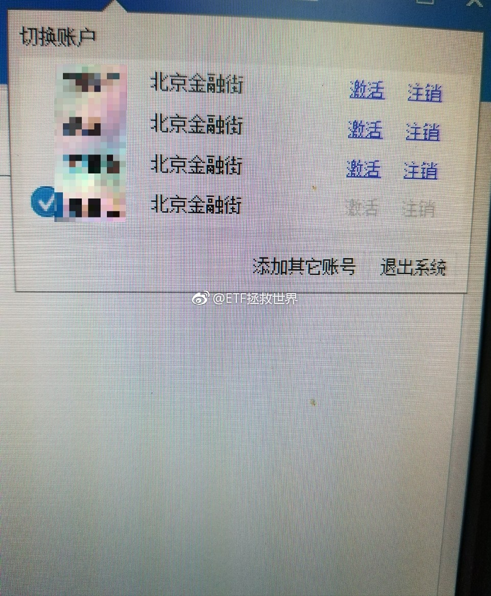

回复@BuBu蛇:极限可以给佢15个巴仙//@BuBu蛇:E大，创业板的顶配会是多少份呢？//@ETF拯救世界:回复@宁志忠:不熊咱们怎么买剩下的二十份？//@宁志忠:e大，创业板怎么熊了？//@ETF拯救世界:美元债买少了？嗷~~一声昏古起了。---:抱歉，此微博已被作者删除。查看帮助： 网页链接
还……是……不……买……//@ETF拯救世界:还是不会买。不用费力气勾引我了。//@ETF拯救世界:没有相对较大的调整，计划不会再加A股了。怎么讲，现在就是鸡肋时间。@ETF拯救世界:呵呵哒，别想骗我今晚买a股。图样了！
回复@BR芭斯罗缤:枪毙五分钟//@BR芭斯罗缤:回复@happymami:啥后果？//@ETF拯救世界:回复@神毕希嫣:今天很简单，申购072271。每个人都能申购10万股，不要钱，中了才缴款。风险收益吗，破发的可能性不大，中了的话，赚也就赚个蚊子腿……//@神毕希嫣:e大，科普一下转债玩法啦@ETF拯救世界:申购转债的正确姿势 
关于那个变道的吧，昨天说了两句，还让人给怼了……怎么讲呢。前车肯定有责任，这个不用说。咱们开车的，也都很痛恨这种人。问题就在于，从我自己的角度讲，如果是后车，会怎么对待这件事。包括从我亲人和朋友的角度出发。有人说，大快人心啊，终于有人治这样的路霸了。不这样以后他不知道怎么开车。没错，我也觉得挺好。但这些都是站在第三者的角度。设身处地，把自己换成后车，或者后车的亲人或者朋友，还会这么想吗。恐怕就不一定了。咱们先不说后车有没有责任，是不是故意撞。就说前车全责吧。你给人撞翻了。自己没事，万幸！那如果前车没系安全带，人死了呢？就算你没责任，也不用赔钱，一条人命啊。你真能一点事都没有？我不太相信。就算人都没事，好。走保险，修车。碰上老实点的人还好。你要碰上不讲理的，他全责也不会好好给你修车。拖着就是不给你走保险，走了也就是不给你钱。怎么着，就是不给你，你告我去啊！告不告？告吧。法院走一圈，人家就是不执行。怎么样？这么一件破事，耽误你无数时间精力，一年后解决了。值吗？你的时间是以多少钱计价的？钱不是问题的话，操的心够不够你烦？还有一个，我的车落点脏东西我都得赶紧擦了，这么撞一下，我得心疼死啊！我的意思不是鼓励前车的行为，我的意思是，我不会有机会刹车避免这次事故的情况而不刹车。如果实在刹不住没办法，如果有机会，我不会故意撞上去。命值钱，时间值钱。蝴蝶效应，这一脚油门，不知道会引发多少后遗症。至于公民素质教育，驾驶员教育，我真的希望ZF能多宣传。把交通事故视频定期在电视网络上不停的循环播放。我相信开车的看多了一定会害怕，也知道遵守交通规则了。遇到持枪抢劫的，该冲上去拼一把还是该躲起来打电话报警，是很重要的选择啊。
讲真，我用过n部智能机里面，mate9真的是很有特点的，有几个点我比较喜欢。一个是续航特别强！我用过最强的。第二是音质很不错。不知道为什么，比s8好，跟苹果不分上下吧。缺点是屏幕不好，总感觉有拖影。第二是工业设计不行，笨，重。我比较看重工业设计。看看mate10会不会好看点。@财联社APP:【华为举行麒麟970国内媒体沟通会 晶体管密度达苹果A11的1.28倍】25日上午，华为在北京举行了麒麟970芯片的媒体沟通会，这是继公司在IFA（2017柏林国际消费类电子展览会）上发布过该芯片后，首次在国内进行该芯片的宣讲。本次沟通会主题为“智汇”，源于“笃学笃行，智汇于芯”，华为表示这体现了海思不断研发实践，将智慧融入芯片的精神。
回复@神毕希嫣:今天很简单，申购072271。每个人都能申购10万股，不要钱，中了才缴款。风险收益吗，破发的可能性不大，中了的话，赚也就赚个蚊子腿……//@神毕希嫣:e大，科普一下转债玩法啦@ETF拯救世界:申购转债的正确姿势
回复@天冰冰天:我说的可用日是10月9日，可取日是10月10日，也就是从现在到这两天的年化收益率。这种错误我不会犯的。。//@天冰冰天:七天到下周一，到期时间点节中，整个十一钱躺账户里要错过了吧@ETF拯救世界:友情提示，目前逆回购7天收益率最高。可用日5.357，可取日5。可以放一部分。
回复@幸福猪兜仔:4天跌了15%，是不是给你机会进了。43的话，现在买入有几十个点的收益了。//@幸福猪兜仔:我估计今年的8月30号左右，融创就可以涨到43元以上，然后就可以找益达的指数基金去当接盘侠，老大，你说是不是很开心啦@ETF拯救世界:持仓品种都没有新高，账户继续每天新高ing。amazing。
回复@乐悠悠水柔柔:基本是。大家可以申购试试。反正中的机会几乎没有。//@乐悠悠水柔柔:e大，今天雨虹可转债真的是无风险吗？//@ETF拯救世界:回复@阿杰_Future:那我念一句清代的唱词，莫非还是五阿哥穿越回来的吗！@ETF拯救世界:列宁同志已经不咳嗽了，他已经不发烧了！
回复@阿杰_Future:那我念一句清代的唱词，莫非还是五阿哥穿越回来的吗！//@阿杰_Future:与青春有关的日子 的经典桥段, 老大你暴露年龄了噢@ETF拯救世界:列宁同志已经不咳嗽了，他已经不发烧了！